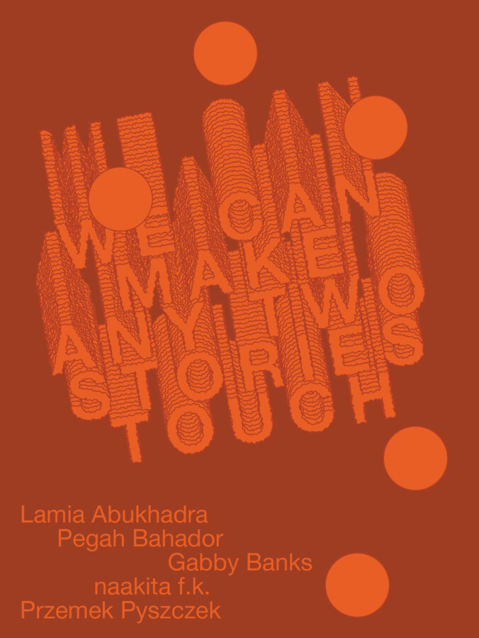

We can make any two stories touch: 2026 MFA Thesis Exhibition at Northwestern University
Each spring the Block Museum is pleased to present the work of the Masters of Fine Arts candidates in the Department of Art Theory & Practice. This year’s exhibition, We can make any two stories touch, showcases the diverse accomplishments of five international artists: Lamia Abukhadra, Pegah Bahador, Gabby Banks, naakita f.k. and Przemek Pyszczek. Reflecting the intensive research undertaken during their two-year residency at Northwestern, the thesis projects brought together in We can make any two stories touch encompass a range of material and methodological approaches, posing fresh lines of inquiry into the conditions giving shape to the present moment. The exhibition marks an early milestone in these artists’ careers, and also offers a glimpse into the future of contemporary art.
This exhibition and associated events are co-organized by the Department of Art Theory & Practice and the Block Museum of Art at Northwestern University. Support is provided by the Norton S. Walbridge Fund; the Myers Foundations; the Jerrold Loebl Fund for the Arts; and the Alsdorf Gallery Endowment, and the Illinois Arts Council.
Join us in celebration for the opening reception. —
Lamia Abukhadra is a Palestinian American artist whose practice explores how disasters can resurrect and generate new forms of perception, collectivity and resistance, often using the Palestinian context as an urgent microcosm. Within her works, she embeds speculative frameworks which bring to light intimate and historical connections, poetic occurrences and generative possibilities of survival, mutation and self-determination.
Abukhadra graduated from the University of Minnesota with a BFA in studio art in 2018. She is a 2019-2020 Home Workspace Program Fellow at Ashkal Alwan in Beirut, a 2021–2022 Jan van Eyck Academie Resident in Maastricht and a 2025 Flaherty Fellow. Her work has been exhibited in Minneapolis, Chicago, Beirut and Berlin. Abukhadra is also a cultural worker and currently holds the position of Art and Communications Director at Mizna (St. Paul, MN).
Pegah Bahador (b. 1998, Tehran) practices doori o doosti, a Farsi term that translates to “distance and friendship,” and emphasizes how the two coexist and (even sonically) intertwine. This epistolary practice suggests writing as an act in translation, or with an accent; and is itself a type of correspondence between them and their subjects. They work between sculpture, drawing and language to emphasize ground and language displacement. They earned their BFA at Tehran University of Art and their MFA in Art Theory & Practice at Northwestern University.
Born in Nassau, Bahamas, Gabby Banks received her BFA in Painting from the Rhode Island School of Design in 2019. Her practice investigates standards of “mastery” in contemporary painting while challenging racialized narratives in figurative work, particularly the expectation that marginalized artists produce work centered on trauma or violence. Banks has exhibited internationally, showcasing in The Bahamas and the United Kingdom, and has completed fellowships at the Vermont Studio Center in Johnson, Vermont, and the Wassaic Project in Wassaic, NY.
She is particularly committed to amplifying emerging creative voices and fostering community through the arts. As a practicing artist and creative professional, she hopes to contribute to and learn from diverse creative spaces that value experimentation and social engagement. Currently focused on subverting an anti-critical culture surrounding Black contemporary art, Banks is eager to be challenged by her ambition to create alternative interrogations of figurative painting. naakita f.k. is an interdisciplinary artist whose practice considers place in relation to resource extraction and the extractive ideologies that show up in the wake of violence to land and communities. Working across audio, video, photography, scent, text and textile, their work centers corporeal experience as a reminder that it is only with our bodies that knowledge and practice can come together to make meaning.